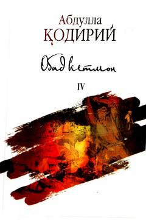

OKMehnatsevar va donishmand dehqon Obid ketmonning hayoti va ibratli yo'li haqidagi qissa.
Abdulla Qodiriyning ushbu qissasi mehnatsevar va donishmand dehqon Obid ketmonning hayoti hamda uning atrofidagilarga shaxsiy namuna bo'lishi haqida hikoya qiladi. Asar insonning yerga bo'lgan munosabati, halol mehnat va sabr-toqatning jamiyatdagi o'rni kabi mavzularni qamrab oladi.